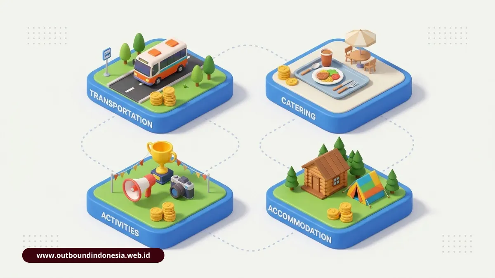

Outbound Indonesia adalah kegiatan pelatihan berbasis permainan dan pengalaman langsung, di ruang terbuka maupun tertutup, yang dirancang untuk menguatkan kerja sama, komunikasi, dan kepemimpinan peserta. Ciri pembedanya adalah sesi refleksi terstruktur setelah permainan. Biaya paket berkisar dari ratusan ribu rupiah per orang untuk program sehari hingga jutaan rupiah untuk pelatihan intensif menginap.
Apa Itu Outbound dan dari Mana Asalnya?
Outbound adalah metode pembelajaran terapan yang disimulasikan lewat permainan di alam terbuka atau ruang tertutup, menggabungkan unsur kecerdasan, fisik, dan mental peserta. Konsepnya berakar dari gerakan pendidikan petualangan di Eropa.
Bagaimana Outward Bound Menjadi Outbound?
Gagasan awalnya lahir dari Kurt Hahn, cendekiawan kelahiran Jerman pada 5 Juni 1886, yang mengembangkan Outward Bound sebagai pendidikan petualangan. Di Indonesia istilah itu disederhanakan menjadi outbound dan sering dimaknai secara bebas sebagai kegiatan keluar dari bingkai kebiasaan.
Apa Definisi Akademis Outbound?
Secara akademis, outbound termasuk experiential learning, yaitu proses belajar yang dimulai dari pengalaman nyata, dilanjutkan refleksi, lalu penerapan. Peserta tidak diceramahi tentang kerja sama. Mereka mengalaminya, menganalisis apa yang terjadi, dan membawa pelajarannya ke pekerjaan sehari-hari.
Apa Bedanya Outbound dengan Gathering dan Outing?
Outbound bertujuan melatih keterampilan lunak seperti kepemimpinan, pemecahan masalah, dan kerja sama melalui simulasi terstruktur plus evaluasi reflektif. Gathering lebih menekankan keakraban dan penyegaran lewat makan bersama, hiburan musik, dan permainan ringan. Paket gabungan menyatukan pelatihan karakter di siang hari dengan malam keakraban.
Apa Saja Jenis Outbound di Indonesia?
Outbound dapat dikelompokkan menurut jenis kompetensi, sasaran perubahan, dan durasi. Pengelompokan ini membantu penyelenggara menentukan program yang cocok dengan tujuan organisasi.
Apa Perbedaan Soft Skills dan Hard Skills dalam Outbound?
Program soft skills memperkuat kapasitas personal dan antarpribadi, seperti komunikasi, kepemimpinan, konsentrasi, dan perencanaan strategis, dengan beban fisik ringan. Program hard skills menuntut keterampilan teknis lapangan, kecepatan, ketepatan, dan ketahanan fisik, misalnya rafting, paintball, dan high rope.
Apa Empat Tingkatan Program Menurut Priest, Simon dan Gass?
Klasifikasi Priest, Simon dan Gass (1992) membagi program berdasarkan sasaran perubahan dan komposisi sesi debrief:
- Rekreasi: target perasaan senang, 100 persen aktivitas fisik tanpa debrief.
- Pendidikan: target perubahan cara berpikir, 75 persen aktivitas dan 25 persen debrief.
- Pengembangan: target perubahan pola perilaku, 50 persen aktivitas dan 50 persen debrief.
- Redirection: target memperbaiki perilaku disfungsional, 25 persen aktivitas dan 75 persen debrief.
Bagaimana Pengelompokan Berdasarkan Durasi dan Format?
Format singkat berupa fun games dan team building berlangsung beberapa jam. Format menengah berupa gathering menginap dua hari satu malam. Format intensif seperti adversity training berlangsung tiga sampai lima hari dan dinilai lebih efektif menanamkan pola pikir baru serta ketahanan mental bagi peserta seperti management trainee, sedangkan program singkat berbasis permainan cenderung memberi hasil sementara.
Apa Manfaat Outbound Menurut Penelitian?
Manfaat outbound didukung riset empiris, terutama pada kolaborasi tim, aspek afektif, dan kinerja kerja. Bukti terkuat berasal dari studi kolaborasi guru SMK dan meta-analisis pelatihan tim berskala global.
Seberapa Besar Peningkatan Kolaborasi Setelah Outbound?
Studi Cahyaningrum dkk. (2025) dengan pendekatan sequential exploratory mixed method terhadap 78 guru dari tiga jurusan SMK mencatat skor kolaborasi naik dari 5,84 menjadi 8,72 pada skala 1 sampai 10. Itu setara kenaikan rata-rata 49,4 persen setelah pelatihan outbound berbasis experiential learning.
Apa Temuan Meta-Analisis tentang Pelatihan Tim?
Meta-analisis Salas dkk. (2008) mengkaji 93 effect size dari 2.650 tim. Hasilnya menunjukkan hubungan positif tingkat sedang antara pelatihan tim terstruktur dan luaran kelompok, terutama aspek afektif, proses kerja sama, kemampuan kognitif, serta performa kerja nyata.
Apa Nilai Pengembangan Diri dari Outbound?
Peserta berlatih mengambil keputusan di bawah tekanan, memberi dan menerima umpan balik, serta memimpin tanpa jabatan formal. Kemampuan itu berguna bagi calon pemimpin maupun karyawan yang perlu bekerja lintas divisi.
Permainan Apa yang Biasa Digunakan dalam Outbound?
Permainan outbound umumnya dibagi menjadi pemecah suasana, simulasi kepercayaan, dan tantangan pemecahan masalah. Setiap jenis melayani tujuan belajar yang berbeda dan hanya bermakna bila diikuti sesi refleksi.
Apa Itu Ice Breaking dan Energizer?
Ice breaking adalah permainan ringan untuk mencairkan suasana di awal acara. Energizer menjaga semangat peserta saat energi menurun. Keduanya menurunkan kecanggungan sehingga peserta siap masuk ke simulasi yang lebih menantang.
Permainan Apa yang Melatih Kepercayaan dan Komunikasi?
Aktivitas seperti berjalan dengan mata tertutup dituntun rekan, jembatan kepercayaan, dan melewati area dengan panduan suara memaksa peserta mengandalkan orang lain. Dari situ muncul diskusi tentang pentingnya instruksi yang jelas dan sikap saling percaya.
Permainan Apa yang Melatih Pemecahan Masalah?
Membangun menara dari bahan terbatas, mengatur rute perburuan harta karun, atau memindahkan bola secara kolektif menuntut pembagian peran dan strategi. Tim belajar bahwa rencana yang matang sering mengalahkan kecepatan semata.
Mengapa Debriefing Menentukan Hasil Outbound?
Debriefing adalah sesi tanya jawab terpandu setelah permainan yang mengubah pengalaman menjadi pelajaran. Tanpa debriefing, outbound berhenti sebagai rekreasi. Siklus belajar Kolb (1984) menjelaskan alurnya: mengalami, merefleksikan, membangun konsep, lalu mencoba kembali di tempat kerja.
Berapa Biaya Paket Outbound di Indonesia?
Berdasarkan data paket yang tercantum di website, harga program outbound berkisar dari Rp 100.000 hingga Rp 650.000 per peserta. Harga dapat berbeda berdasarkan jenis program, durasi, fasilitas, dan jumlah minimum peserta serta dapat berubah sewaktu-waktu.

Komponen biaya paket outbound dipengaruhi oleh instruktur, sewa venue, konsumsi, dan fasilitas tambahan.
Apa Saja Komponen Pembentuk Biaya Outbound?
Komponen utama meliputi honor instruktur dan master game, sewa venue, konsumsi, peralatan permainan, dokumentasi, dan transportasi. Paket menginap menambahkan akomodasi, ruang meeting, dan acara malam.
Berapa Rincian Harga Paket Outbound di Website?
Berikut paket yang tercantum pada halaman paket website beserta harga program dan batas minimum pesertanya:
| Paket | Durasi / Format | Harga per Peserta | Min. Peserta | Fasilitas Utama |
|---|---|---|---|---|
| Corporate Team Building | Program team building | Rp 185.000 | 30 pax | Area privat, fasilitator BNSP, sound system, equipment, makan siang, coffee break |
| Kids Outbound Edutainment | Program edukatif | Rp 125.000 | 25 anak | Kolam renang, edukasi alam, factory tour, games, flying fox anak, lunch box |
| Family Outbound Gathering | Family gathering | Rp 150.000 | 20 pax | Saung, family games, MC, kereta wisata, makan siang, snack |
| Paintball & Adventure | Paintball + adventure | Rp 235.000 | 20 pax | 50 peluru, perlindungan, flying fox 150 m, safety marshal, makan siang |
| Camping Outbound 2D1N | 2 hari 1 malam | Rp 320.000 | 20 pax | Tenda, sleeping bag, outbound, api unggun, BBQ, makan, coffee break |
| Executive Leadership Retreat | Retreat kepemimpinan | Rp 650.000 | 15 pax | Penginapan, meeting room, leadership, offroad Jeep, gala dinner |
Catatan: Harga di atas merupakan estimasi dan tidak mengikat, calon pelanggan sebaiknya mengonfirmasi harga akhir, ketersediaan, dan penyesuaian fasilitas kepada admin sebelum pemesanan.
Di Mana Lokasi Outbound Unggulan di Indonesia?
Lokasi unggulan tersebar di Jawa Barat, Jawa Timur, Jawa Tengah, Banten, dan Bali. Pilihan terbaik bergantung pada jumlah peserta, jenis aktivitas, dan jarak dari kantor.
Bagaimana dengan Kawasan Puncak dan Bogor?
Kawasan ini menawarkan hutan pinus, sungai, dan air terjun. Highland Camp Curug Panjang cocok untuk leadership camp berkapasitas besar, sedangkan Lido Adventure Park mencakup lahan sekitar 3.000 hektar dengan flying fox melintasi danau.
Bagaimana dengan Lembang dan Bandung?
Terminal Wisata Grafika Cikole di Lembang menyediakan flying fox, zip coaster, jembatan tali, dan paintball di tengah hutan pinus, lengkap dengan villa dan glamping.
Bagaimana dengan Pacet dan Trawas?
Pacet dan Trawas di Mojokerto dikenal dengan arung jeram di sungai pegunungan dan resor pelatihan seperti Grand Whiz Trawas, dengan latar Gunung Welirang dan Penanggungan.
Bagaimana dengan Jawa Tengah dan Bali?
Kampoeng Kopi Banaran di Semarang memadukan kebun kopi edukatif dengan panjat jaring dan ATV. Alam Tirta Outbound di Badung, Bali, menyediakan rafting, flying fox, paintball, dan camping di suasana pedesaan.
Bagaimana Cara Memilih Vendor Outbound yang Kredibel?
Vendor yang layak dipilih memiliki fasilitator bersertifikat, standar keselamatan tertulis, serta proposal yang rinci dan selaras dengan nilai perusahaan. Periksa keempat aspek itu sebelum menandatangani kontrak.
Apa Legalitas dan Sertifikasi yang Perlu Diperiksa?
Standar kompetensi fasilitator outbound diatur dalam Keputusan Menteri Tenaga Kerja dan Transmigrasi No. KEP 329/MEN/XII/2011. Sertifikasi dilakukan oleh BNSP, dengan dukungan AELI, dalam jenjang Fasilitator Muda, Madya, dan Utama. Informasi lembaga sertifikasi dapat diperiksa melalui situs resmi BNSP.
Apa Standar Keselamatan yang Harus Ada?
Tanyakan prosedur tanggap darurat, penilaian risiko, perlengkapan pengaman aktivitas tali tinggi, kemampuan pertolongan pertama, dan cakupan asuransi kegiatan. Rasio pemandu terhadap peserta juga perlu seimbang.
Bagaimana Mengevaluasi Proposal dan Portofolio?
Proposal yang baik memuat rundown per menit, target perilaku yang jelas, rincian logistik, dan transparansi anggaran. Vendor yang matang mampu mengerjakan skala 30 hingga lebih dari 500 peserta dan punya rencana cadangan untuk format luar ruang, ballroom, maupun hybrid. Tema permainan idealnya diterjemahkan dari nilai budaya kerja perusahaan lewat alur cerita.
Kesimpulan Praktis
Tentukan tujuan terlebih dahulu: keakraban, pembelajaran, atau perubahan perilaku. Tujuan itu menentukan durasi, porsi debrief, dan anggaran.
Untuk target perilaku, pilih program yang memberi ruang refleksi memadai, bukan hanya permainan. Bandingkan minimal tiga vendor dengan parameter yang sama: sertifikasi fasilitator, prosedur keselamatan, kualitas proposal, dan rincian biaya per peserta. Gunakan estimasi harga di atas sebagai pembanding awal, lalu minta penawaran tertulis sesuai jumlah peserta Anda.

Tim Outbound Indonesia
Praktisi instruktur certified BNSP, spesialis keselamatan high rope, dan konsultan team building corporate.